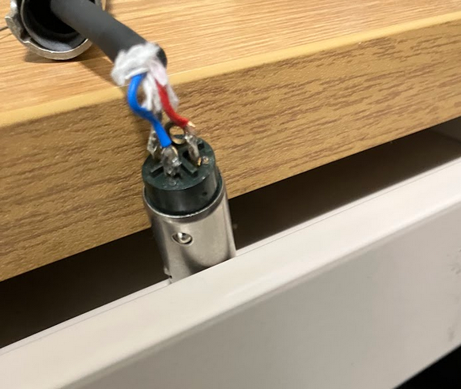

Work / Interests
I do a lot of Audio/Visual planning for events, as well as soldering and equipment repair. My most commonly soldered thing is XLR Cables, but most excitingly, I've repaired a JVC GY-HM 650U camera (Pictured Below)



I do a lot of Audio/Visual planning for events, as well as soldering and equipment repair. My most commonly soldered thing is XLR Cables, but most excitingly, I've repaired a JVC GY-HM 650U camera (Pictured Below)
